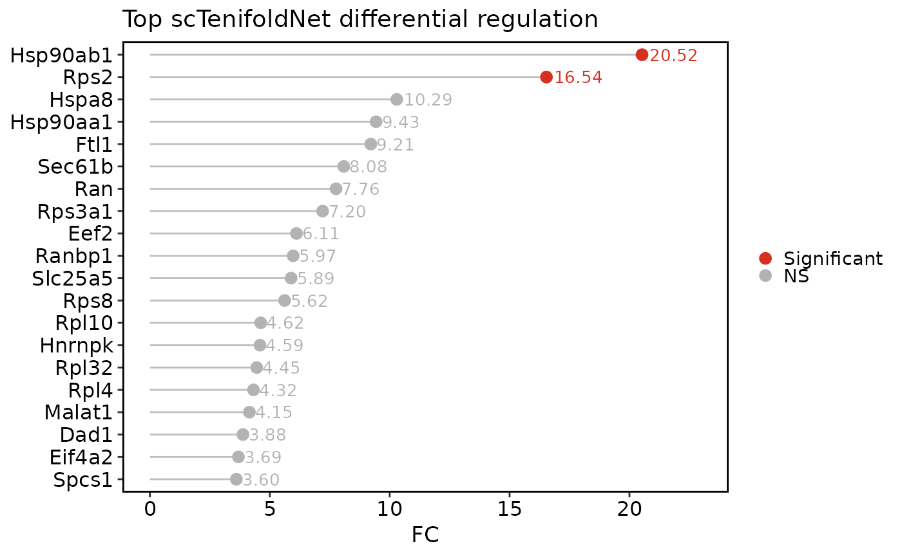
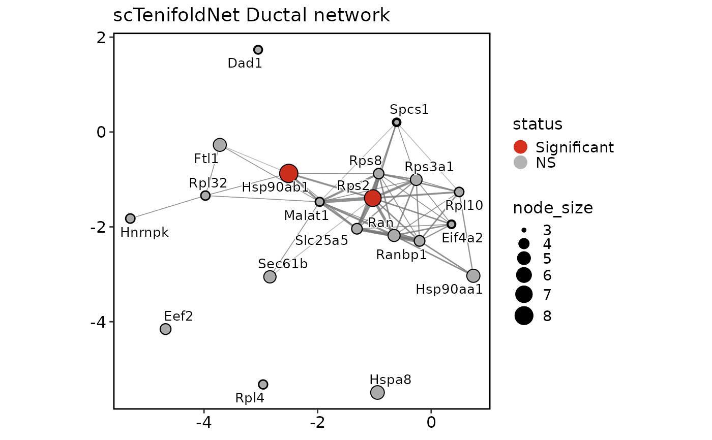
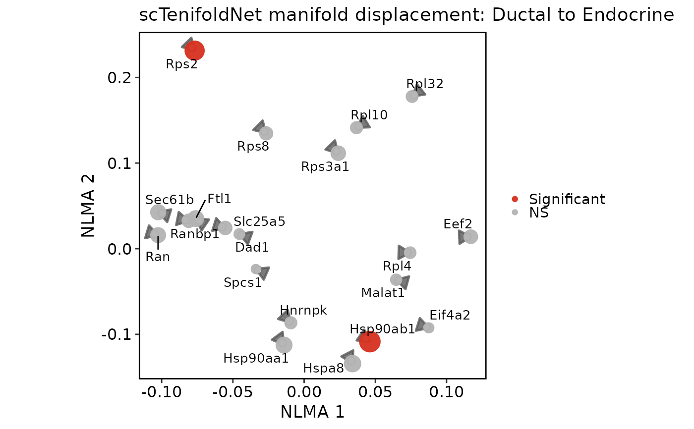

Visualize condition-level network comparison results generated by RunscTenifoldNet.
Usage
scTenifoldNetPlot(
srt,
tool_name = "scTenifoldNet",
plot_type = c("qq", "effect", "network", "manifold"),
network = c("X", "Y"),
top_n = 20,
FDR_threshold = 0.05,
FC_threshold = 1,
features = NULL,
label = TRUE,
nlabel = 10,
pt.size = 2,
pt.alpha = 0.85,
label.size = 3.5,
edge_top_n = 100,
edge_threshold = NULL,
arrow.length = 0.14,
arrow.linewidth = 0.8,
arrow.alpha = 0.8,
start.pt.size = 2.2,
end.pt.size = 3,
manifold.aspect.ratio = 1,
cols.sig = "#D7301F",
cols.ns = "grey70",
xlab = NULL,
ylab = NULL,
title = NULL,
theme_use = "theme_scop",
theme_args = list(),
verbose = TRUE
)Arguments
- srt
A Seurat object containing a scTenifoldNet result in
srt@tools.- tool_name
Name of the
srt@toolsentry created by RunscTenifoldNet.- plot_type
Plot type.
"qq"shows the commonFCversus theoretical chi-square quantile plot."effect"ranks top differential-regulation genes byFC."network"draws a condition-specific tensor network subgraph from saved tensor networks using thisplot::GraphPlot."manifold"draws paired condition displacement arrows in the non-linear manifold-alignment space.- network
Tensor network to show for
plot_type = "network". Upstream scTenifoldNet results usually contain"X"and"Y"networks.- top_n
Number of top genes to show or label.
- FDR_threshold
Adjusted p-value cutoff used to mark significant genes.
- FC_threshold
FC cutoff used to mark significant genes.
- features
Character vector of genes to show or label. For
plot_type = "network"and"manifold", these genes are included in the displayed subset when present.- label
Whether to label genes.
- nlabel
Number of labels to add when
features = NULL.- pt.size
Point size.
- pt.alpha
Point transparency.
- label.size
Label text size.
- edge_top_n
Maximum number of network edges to draw.
- edge_threshold
Minimum absolute edge weight for
plot_type = "network". IfNULL, the largestedge_top_nedges are used.- arrow.length
Arrow head length for
plot_type = "manifold".- arrow.linewidth
Arrow line width for
plot_type = "manifold".- arrow.alpha
Arrow transparency for
plot_type = "manifold".- start.pt.size
WT-position point size for
plot_type = "manifold".- end.pt.size
KO-position point size for
plot_type = "manifold".- manifold.aspect.ratio
Panel aspect ratio for
plot_type = "manifold". Default1keeps the panel square. SetNULLto use the device aspect ratio.- cols.sig
Color for significant genes.
- cols.ns
Color for non-significant genes.
- xlab, ylab
Axis labels.
- title
Plot title. If
NULL, a default title is used.- theme_use
Theme function used to style the plot.
- theme_args
Other arguments passed to
theme_use.- verbose
Whether to print the message. Default is
TRUE.
Examples
data(pancreas_sub)
counts <- GetAssayData5(pancreas_sub, assay = "RNA", layer = "counts")
detected <- names(sort(Matrix::rowSums(counts > 0), decreasing = TRUE))
features_use <- head(detected, 300)
pancreas_sub <- RunscTenifoldNet(
pancreas_sub,
group.by = "CellType",
condition1 = "Ductal",
condition2 = "Endocrine",
features = features_use,
qc = FALSE,
nc_nNet = 3,
nc_nCells = 200,
td_maxIter = 200,
ma_nDim = 2,
store_networks = TRUE,
store_manifold = TRUE
)
#> ℹ [2026-06-01 10:56:37] Run scTenifoldNet comparison using upstream implementation
#>
|
| | 0%
|
|= | 1%
|
|= | 2%
|
|== | 2%
|
|== | 3%
|
|== | 4%
|
|=== | 4%
|
|==== | 5%
|
|==== | 6%
|
|===== | 6%
|
|===== | 7%
|
|======================================================================| 100%
#>
|
| | 0%
|
| | 1%
|
|= | 1%
|
|= | 2%
|
|== | 2%
|
|======================================================================| 100%
#> ✔ [2026-06-01 10:57:00] scTenifoldNet results stored in `object@tools[[scTenifoldNet]]`
scTenifoldNetPlot(pancreas_sub, plot_type = "effect")

scTenifoldNetPlot(pancreas_sub, plot_type = "network", network = "X")

scTenifoldNetPlot(pancreas_sub, plot_type = "manifold")
